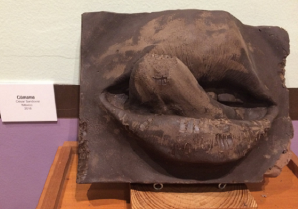
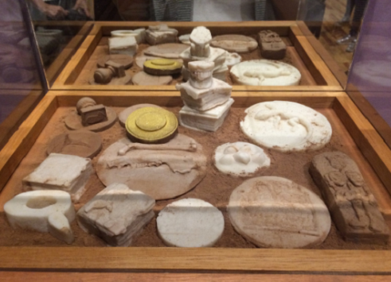
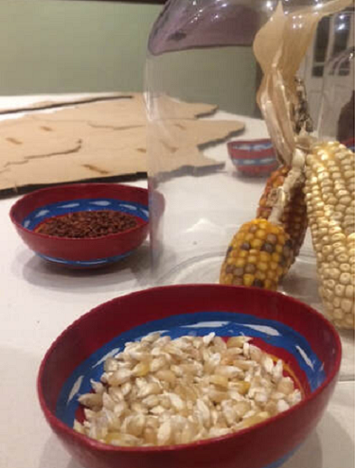
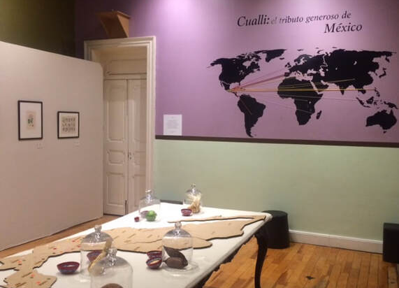

El Cuerpo del Chocolate
El cuerpo y el chocolate se encontraron desde hace mucho, vagando por las aguas de la laguna estigia, y en su relación crearon habito, simbiosis;
Metida en carne, extática y silenciosa, está la semilla.
A veces en la punta de lengua, en el extremo de la pronunciación.
La semilla se hizo cuerpo al extender sus ramas, un cuerpo en reposo en espera de acción;
Chocolate democrático se toma con los dioses o con los monjes, con los niños o los viejos; con bolillo, Concha o Remedios, con el parto o el muerto; con maíz, chile o axiote, quizá con epazote.
Cualli: el tributo generoso de México
Lo bueno -cualli- es lo que da alimento al hombre,y lo que, como el hombre, es capáz de
reproducirse y prosperar, frutecer, ser eterno,nuevo a cada primavera, a cada reencarnación
Esa es la verdadera, la imperecedera riqueza; la que cuando México
entrega al mundo, su cesión no constituye un despojo que lo prive de su riqueza natural ni que lo empobrezca; sino una fraternal comunicación de sus bienes.
Lo que no se agota: nuestras semillas, plantas, frutas;que llevará por todo el mundo el tributo generoso de México.
